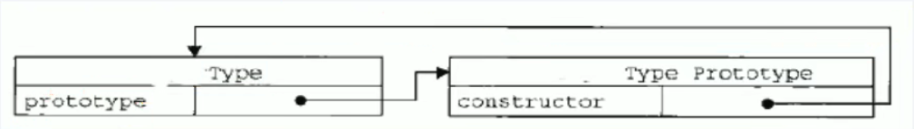
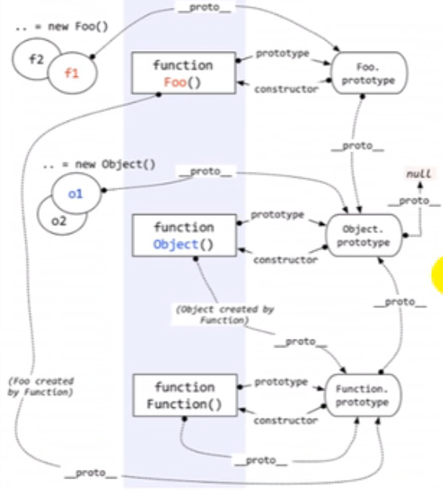
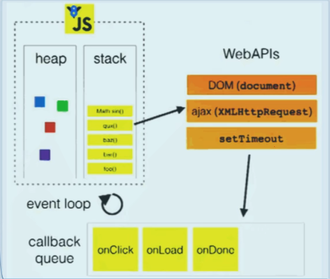

每个函数都有一个prototype属性，它默认指向一个Object空对象(即称为:原型对象)
原型对象中有一个属性constructor,它指向函数对象
给原型对象添加属性(一般都是方法)
作用:函数的所有实例对象自动拥有原型中的属性(方法)
xxxxxxxxxx121Function.prototype.constructor === Function // true2
3// 为原型添加方法并调用4Fun.prototype.test = function() {};5var fun = new Fun();6fun.test();7
8// Function本身是自己的实例9Function.prototype === Function.__proto__ //true10// 隐式原型链尽头是Object,而Object没有隐式原型，Object.__proto__=n11// Object.__proto__ = Function.prototype12// Object.prototype.__proto__ = null;

每个函数function都有一个prototype，即显式原型(属性)
每个实例对象都有一个__proto__，可称为隐式原型(属性)
对象的隐式原型的值 === 对应构造函数的显式原型的值
给显示原型添加方法，实例对象可以直接调用（通过隐式原型）
总结:
函数的prototype属性:在定义函数时自动添加的，默认值是一个空0bject对象
对象的__proto__属性:创建对象时自动添加的，默认值为构造函数的prototype属性值
程序员能直接操作显式原型，但不能直接操作隐式原型(ES6之前)
在执行全局代码前将window确定为全局执行上下文
对全局数据进行如下预处理：
最终开始执行全局代码
在调用函数，准备执行函数体之前，创建对应的函数执行上下文对象
对局部数据进行如下预处理：
最终开始执行函数体代码
1.在全局代码执行前,JS引擎就会创建一个栈来存储管理所有的执行上下文对象
2.在全局执行上下文(window)确定后,将其添加到栈中(压栈)
3.在函数执行上下文创建后,将其添加到栈中(压栈)
4.在当前函教执行完后,将栈顶的对象移除(出栈)
5.当所有的代码执行完后,栈中只剩下window
区别1
区别2
联系
当一个嵌套的内部(子)函数引用了嵌套的外部(父)函数的变量(函数)时，就产生了闭包
理解一:闭包是嵌套的内部函数(绝大部分人)
理解二:包含被引用变量(函数)的对象(极少数人)
注意:闭包存在于嵌套的内部函数中
函数嵌套
内部函数引用了外部函数的数据(变量/函数)
使用函数内部的变量在函数执行完后，仍然存活在内存中(延长了局部变量的生命周期)
让函数外部可以操作(读写)到函数内部的数据(变量/函数)
xxxxxxxxxx221// 1．将函数作为另一个函数的返回值2function fn1() {3 var a = 24 var b = 35 function fn2() {6 a++7 console.log(a)8 }9 return fn210}11var f = fn1()12f() //313f() //414// 闭包中只有一个a属性15
16// 2．将函数作为实参传递给另一个函数调用17function showDeLay(msg, time) {18 setTimeout(function () {19 alert(msg)20 }, time)21}22showDelay('xxx', 2000)产生：在嵌套内部函数定义执行完时就产生了(不是在调用)
死亡：在嵌套的内部函数成为拉圾对象时
模块：
模块的使用者，只需要通过模块暴露的对象调用方法来实现对应的功能
xxxxxxxxxx391// 模块化方法一2function myModule() {3 // 私有数据4 var msg = 'My atguigu'5 // 操作数据的函数6 function doSomething() {7 console.log('dosomething()' + msg.toUpperCase())8 }9 function dootherthing() {10 console.log("do0therthing()"+ msg.toLowerCase())11 }12 //向外暴露对象(给外部使用的方法)13 return {14 doSomething: doSomething,15 dootherthing: dootherthing16 }17}18
19// 模块化方式二20(function () {21 //私有数据22 var msg = "My atguigu'操作数据的函数23 function doSomething() {24 console.log('doSomething()' + msg.toUpperCase())25 }26 function dootherthing() {27 console.log('dootherthing()' + msg.toLowerCase())28 }29 //向外暴露对象(给外部使用的方法)30 window.myModule2 = {31 doSomething: doSomething,32 doOtherthing: dootherthing33 }34})()35
36/*37前者引入之后还需要调用函数才会产生闭包，才能调用相关导出的模块化函数38后者不需要引入即可直接调用39*/缺点
解决
xxxxxxxxxx101// 利用闭包2// 这样就可以不需要为btn对象添加index属性了，可以直接利用闭包保存i3for (var i = 0, length = btns.length; i < length; i++){4 (function (i){5 var btn = btns[i]6 btn.onclick = function () {7 alert('第' + (i+1) + '个")8 }9 })(i)10}xxxxxxxxxx541/*方式一:object构造函数模式2*套路:先创建空object对象，再动态添加属性/方法3*适用场景:起始时不确定对象内部数据4*问题:语句太多5*/6var person = new Object();7person.xxx = xxx;8
9/*方式二:对象字面量模式10*套路:使用{}创建对象，同时指定属性/方法11*适用场景:起始时对象内部数据是确定的12*问题:如创建多个对象,有重复代码13*/14var person = {15 xxx: xxx16}17
18/*方式三:工厂模式19*套路:通过工厂函数动态创建对象并返回20*适用场景:需要创建多个对象21*问题:对象没有一个具体的类型,都是Object类型22*/23function createPerson(xxx, xx) {24 return {25 xxx: xxx,26 xxx: xx27 }28}29var p1 = createPerson(xxx, xxx);30
31/*方式四:自定义构造函数模式32*套路:自定义构造函数，通过new创建对象33*适用场景:需要创建多个类型确定的对象34*问题:每个对象都有相同的数据，浪费内存35*/36function Person(xx, xxx) {37 this.xx = xx;38 this.xxx = xxx;39}40var p = new Person(xx, xxx);41
42/*方式六:构造函数+原型的组合模式43*套路:自定义构造函数，属性在函数中初始化，方法添加到原型上44*适用场景:需要创建多个类型确定的对象45*/46function Person(xx, xxx) {47 this.xx = xx;48 this.xxx = xxx;49}50Person.prototype.setXx = function(xx) {51 this.xx = xx;52}53var p = new Person(xx, xxx);54
原型链 + 借用构造函数的组合继承
1．利用原型链实现对父类型对象的方法继承
2．利用call()借用父类型构建函数初始化相同属性
xxxxxxxxxx201function Person(name, age) {2 this.name = name3 this.age = age4}5Person.prototype.setName = function(name) {6 this.name = name;7};8
9function Student(name, age, price) {10 Person.call(this，name，age); // 相当于: this.Person(name，age),为了得到属性11 this.price = price;12}13
14student.prototype = new Person(); // 子类型原型指向父类型的实例，为了能看到父类型的方法15student.prototype.constructor = Student; // 修正constructor属性，否则会指向父类型16student.prototype.setPrice = function (price) {17 this.price = price;18}19
20var s = new Student("xx", 18, 1200);代码分类
js引擎执行代码的基本流程:
模型的2个重要组成部分:
模型的运转流程

1、undefined 与nuLL的区别?
undefined代表定义未赋值
nulLl定义并赋值了，只是值为null
2、什么时候给变量赋值为null呢?
初始赋值，表明将要赋值为对象
结束前,让对象成为垃圾对象(被垃圾回收器回收)
3、严格区别变量类型与数据类型?
数据的类型：基本类型&对象类型
变量的类型(变量内存值的类型)：基本类型:保存就是基本类型的数据&引用类型:保存的是地址值
4、内存，数据，变量三者之间的关系
内存用来存储数据的空间
变量是内存的标识，通过变量找到对应的内存，从而操作数据
5、在js 调用函数时传递变量参数时，是值传递还是引用传递
理解1：都是值(基本/地址值)传递
理解2：可能是值传递，也可能是引用传递(地址值)
6、IIFE
全称: ImmediateLy-Invoked Function Expression
作用
xxxxxxxxxx31(function() { // 匿名函数自调用2 console.log(3);3})();7、new一个对象背后做了什么
__proto__,值为构造函数对象的prototype属性值